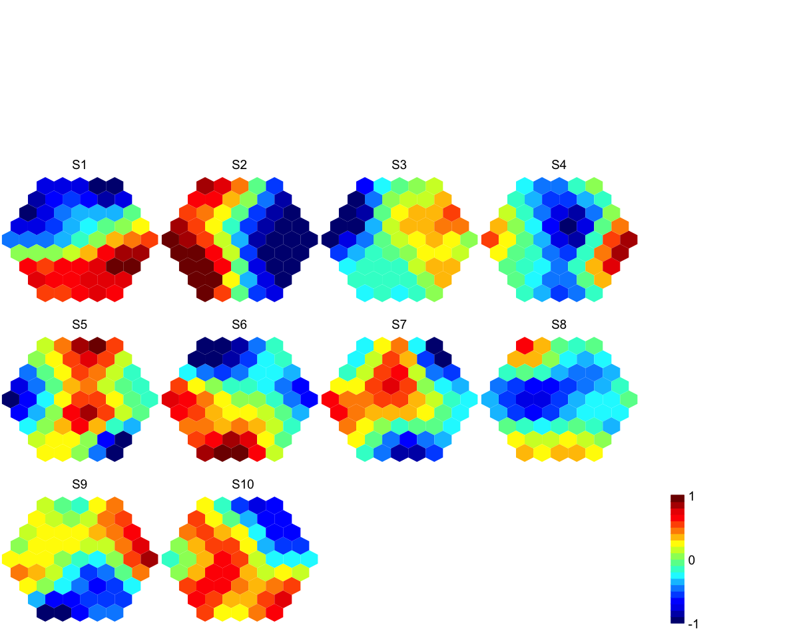

sPipeline is supposed to finish ab inito training
for the input data. It returns an object of class "sMap".
sPipeline(data = NULL, xdim = NULL, ydim = NULL, nHex = NULL, lattice = c("hexa",
"rect"), shape = c("suprahex", "sheet"), init = c("linear", "uniform", "sample"),
algorithm = c("batch", "sequential"), alphaType = c("invert", "linear", "power"),
neighKernel = c("gaussian", "bubble", "cutgaussian", "ep", "gamma"), finetuneSustain = F,
verbose = T)
an object of class "sMap", a list with following components:
nHex: the total number
of hexagons/rectanges in the grid xdim:
x-dimension of the grid ydim: y-dimension
of the grid lattice: the grid lattice
shape: the grid shape coord: a
matrix of nHex x 2, with rows corresponding to the
coordinates of all hexagons/rectangles in the 2D map
grid init: an initialisation method
neighKernel: the training neighborhood
kernel codebook: a codebook matrix of nHex
x ncol(data), with rows corresponding to prototype
vectors in input high-dimensional space
hits: a vector of nHex, each element meaning
that a hexagon/rectangle contains the number of input
data vectors being hit wherein mqe: the
mean quantization error for the "best" BMH
call: the call that produced this result The pipeline sequentially consists of:
sTopology used to define the topology of a
grid (with "suprahex" shape by default ) according to the
input data; sInitial used to
initialise the codebook matrix given the pre-defined
topology and the input data (by default using "uniform"
initialisation method); sTrainology and sTrainSeq
used to get the grid map trained at both "rough" and
"finetune" stages. If instructed, sustain the "finetune"
training until the mean quantization error does get
worse; sBMH used to identify the
best-matching hexagons/rectangles (BMH) for the input
data, and these response data are appended to the
resulting object of "sMap" class. Hai Fang and Julian Gough. (2014) supraHex: an R/Bioconductor package for tabular omics data analysis using a supra-hexagonal map. Biochemical and Biophysical Research Communications, 443(1), 285-289. DOI: http://dx.doi.org/10.1016/j.bbrc.2013.11.103, PMID: http://www.ncbi.nlm.nih.gov/pubmed/?term=24309102
# 1) generate an iid normal random matrix of 100x10 data <- matrix( rnorm(100*10,mean=0,sd=1), nrow=100, ncol=10) colnames(data) <- paste(rep('S',10), seq(1:10), sep="") # 2) get trained using by default setup but with different neighborhood kernels # 2a) with "gaussian" kernel sMap <- sPipeline(data=data, neighKernel="gaussian")Start at 2014-02-25 12:24:59 First, define topology of a map grid... Second, initialise the codebook matrix given a topology and input data... Third, get training at the rough stage... Fourth, get training at the finetune stage... Next, identify the best-matching hexagon/rectangle for the input data... Finally, append the response data (hits and mqe) into the sMap object... Below are the summaries of the training results: dimension of input data: 100x10 xy-dimension of map grid: xdim=9, ydim=9 grid lattice: hexa grid shape: suprahex dimension of grid coord: 61x2 initialisation method: linear dimension of codebook matrix: 61x10 mean quantization error: 4.92761300512866 Below are the details of trainology: training algorithm: batch alpha type: invert training neighborhood kernel: gaussian trainlength (x input data length): 7 at rough stage; 25 at finetune stage radius (at rough stage): from 3 to 1 radius (at finetune stage): from 1 to 1 End at 2014-02-25 12:24:59 Runtime in total is: 0 secs# 2b) with "bubble" kernel # sMap <- sPipeline(data=data, neighKernel="bubble") # 2c) with "cutgaussian" kernel # sMap <- sPipeline(data=data, neighKernel="cutgaussian") # 2d) with "ep" kernel # sMap <- sPipeline(data=data, neighKernel="ep") # 2e) with "gamma" kernel # sMap <- sPipeline(data=data, neighKernel="gamma") # 3) visualise multiple component planes of a supra-hexagonal grid visHexMulComp(sMap, colormap="jet", ncolors=20, zlim=c(-1,1), gp=grid::gpar(cex=0.8))
sTopology, sInitial,
sTrainology, sTrainSeq,
sTrainBatch, sBMH,
visHexMulComp
Fang H, Gough J. (2014) supraHex: an R/Bioconductor package for tabular omics data analysis using a supra-hexagonal map. Biochemical and Biophysical Research Communications, 443(1), 285-289. http://dx.doi.org/10.1016/j.bbrc.2013.11.103, PMID: 24309102
){kind=link}